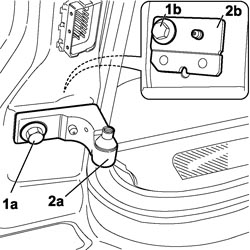
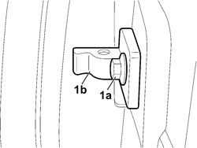

7010A24 REAR SIDE DOOR HINGES (BOLTED) - REPAIR OR REPLACE WITH DOOR REMOVED
- Path
- Procedures > 70 FITTINGS > 7010 PASSENGER COMPARTMENT REAR SIDE DOORS > 7010A REAR SIDE DOOR ASSEMBLY > 7010A24 REAR SIDE DOOR HINGES (BOLTED) - REPAIR OR REPLACE WITH DOOR REMOVED
- Kind
- repair procedure (removal / refitting; the operation number is the code)
- Applies to
- all engines; all production periods
- Interactive page
- https://sloeber94.github.io/elrnDB-fCrm/en/#/194000895
Applies to: all engines; all production periods
 Removing
Removing
 Refitting
Refitting- Carry out the procedures described below for the removal of the bodyshell side half hinges.
Op. 7210E38 R.R. REAR SIDE DOOR
Op. 7040L44 REAR DOOR RUNNING BOARD (ONE), LEFT OR RIGHT - R.R.
Op. 7040H36 CENTRE PILLAR LOWER ELEMENT (ONE), LEFT OR RIGHT - R.R
1. Undo the outer and inner fixing bolts (1a) and (1b).
2. Remove the half hinges (2a) and keep the plate (2b).

Applies to: all engines; all production periods
1. Undo the fixing bolts (1a) and remove the half hinges on the door (1b).

Applies to: all engines; all production periods
Refitting
Removing- Fit the half hinges on the bodyshell side, the half hinges on the door side and screw in the fixing bolts without tightening them to torque.
Op. 7210E38 R.R. REAR SIDE DOOR
Op. 7040H36 CENTRE PILLAR LOWER ELEMENT (ONE), LEFT OR RIGHT - R.R
Op. 7040L44 REAR DOOR RUNNING BOARD (ONE), LEFT OR RIGHT - R.R.
Topics linked from this page (4)
- 7010A14 REAR SIDE DOOR - ADJUST CENTERING AND MOULDING - INCLUDES ADAPTATION OF HINGES AND SEALS ON DOOR COMPARTMENT
- 7040H36 CENTRE PILLAR LOWER ELEMENT (ONE), LEFT OR RIGHT - R.R
- 7040L44 REAR DOOR RUNNING BOARD (ONE), LEFT OR RIGHT - R.R.
- 7210E38 R.R. REAR SIDE DOOR